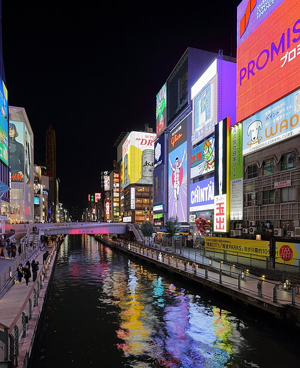
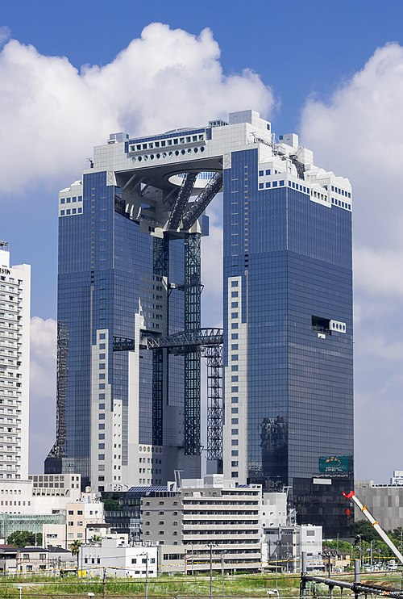
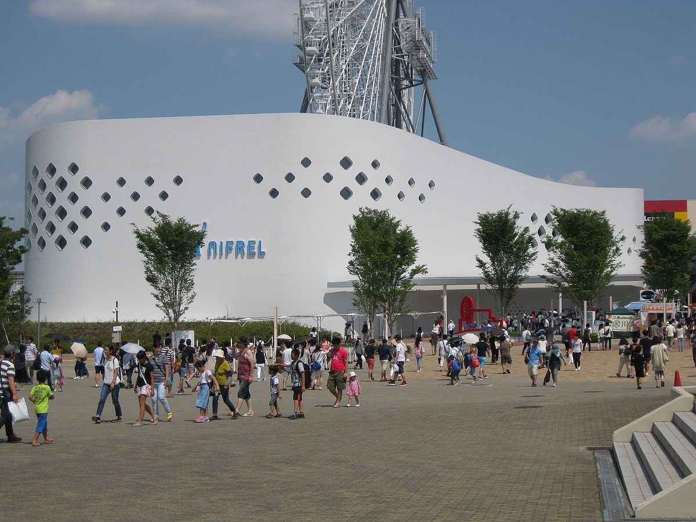
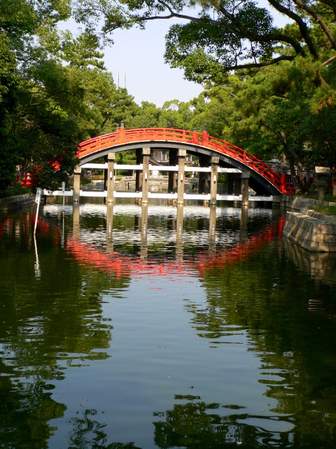
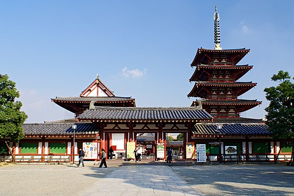
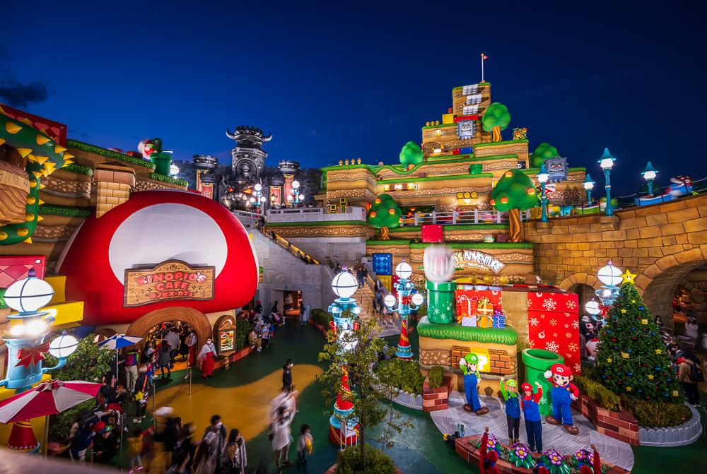
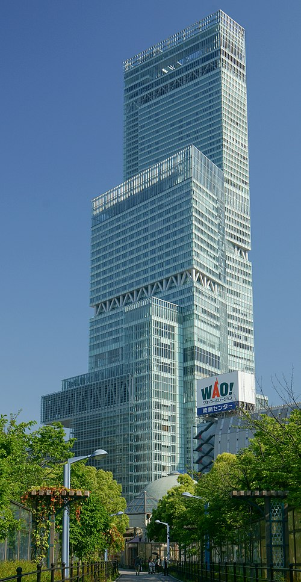
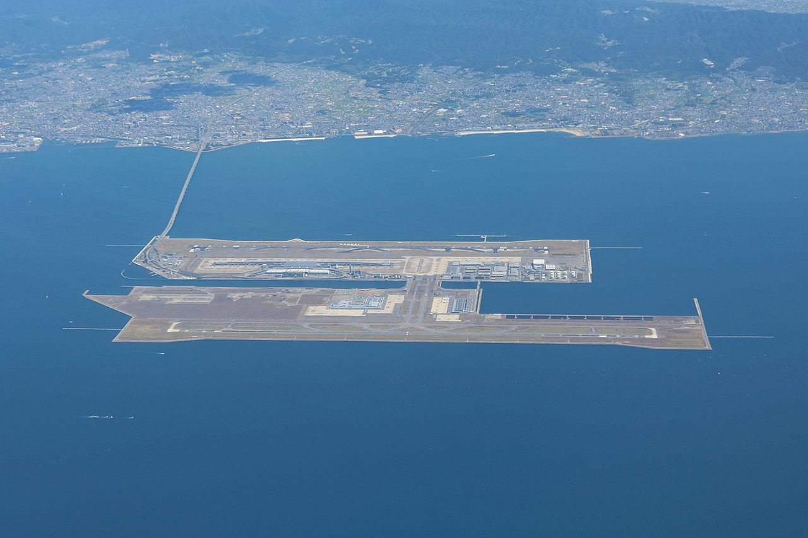

Общая информация
- Отель: Hotel Keihan Yodoyabashi (4.2). Адрес: 2-4-6 Kitahama, Chuo-ku, Osaka, Osaka Prefecture. Центр, рядом с метро Yodoyabashi.
- Завтрак: Не включен в отеле. Бюджет: 300–1,500 JPY (~1.8–9 EUR). Время: 30 мин. Рекомендуются кафе или магазины (Lawson, 7-Eleven) рядом с местами посещения.
- Транспорт:
- Переезд 5 июля: Kyoto → Osaka (JR Tokaido Shinkansen, 15 мин, 1,420 JPY, ~8.5 EUR).
- Местный транспорт: Osaka Metro, JR West, карты Suica/Pasmo/ICOCA (2,000 JPY, ~12 EUR, депозит 500 JPY).
- Osaka Amazing Pass (1 день, 2,800 JPY, ~16.8 EUR) для метро и достопримечательностей.
- Выезд 12 июля: Hotel → Kansai Airport (JR Haruka Express, 50 мин, 2,330 JPY, ~14 EUR).
- Время и стоимость: по Google Maps/Navitime.
- Курс: 1 JPY ≈ 0.006 EUR (апрель 2025).
- Погода: Жарко, влажно (25–33°C). Легкая одежда, солнцезащитный крем, зонты.
- Питание: Бюджет 1,000–3,000 JPY (~6–18 EUR) на обед/ужин. Окономияки, такояки, рамен, тэмпура.
- Google Maps: Ссылки на маршруты. Используйте Navitime для метро.
- График: Выезд 08:00–09:00, возврат 20:00–22:00. 8 июля — легкий день перед ужином.
- Бронирование:
- Universal Studios Japan: за месяц (официальный сайт).
- Yotaro Honten: за 1–2 недели.
- Турнир сумо: за 2–3 месяца, если доступен (проверить на официальном сайте Japan Sumo Association).
День 1: 5 июля 2025 (Прибытие и знакомство с Осакой)
Тема: Городские технологии и гастрономия
Google Maps маршрут: Маршрут 5 июля
- 08:00–08:30 – Завтрак в Киото: Онигири в Lawson Kyoto Station (4.0) (~300 JPY, ~1.8 EUR). Адрес: Higashishiokoji Kamadonocho, Shimogyo-ku, Kyoto. Время: 30 мин.
- 09:00–09:30 – Переезд в Осаку: Kyoto Station → Shin-Osaka (JR Tokaido Shinkansen, 15 мин), Shin-Osaka → Yodoyabashi (Osaka Metro Midosuji Line, 10 мин). Время: 30 мин. Стоимость: 1,600 JPY (~9.6 EUR, Suica).
- 10:00–10:30 – Заселение: Hotel Keihan Yodoyabashi. Адрес: 2-4-6 Kitahama, Chuo-ku, Osaka. Время: 30 мин.
- 11:00–12:00 – Обед: Okonomiyaki Mizuno (4.5), окономияки (~1,500 JPY, ~9 EUR). Адрес: 2-4-2 Dotonbori, Chuo-ku, Osaka. Время: 1 час. Маршрут: метро до Namba (Midosuji Line, 5 мин, 180 JPY, ~1.1 EUR).
- 12:30–15:30 – Dotonbori (4.4): Яркая улица с неоновыми вывесками, AR-инсталляциями. Адрес: Dotonbori, Chuo-ku, Osaka. Время: 3 часа. Стоимость: бесплатно. Пешком 5 мин.
- 16:00–18:00 – Kuromon Market (4.3): Рынок с уличной едой, такояки (~500 JPY, ~3 EUR). Адрес: 2-4-1 Nipponbashi, Chuo-ku, Osaka. Время: 2 часа. Стоимость: еда по желанию. Пешком 10 мин.
- 18:30–20:00 – Ужин: Hajime Ramen (4.6), тонкоцу рамен (~1,200 JPY, ~7.2 EUR). Адрес: 1-9-7 Umeda, Kita-ku, Osaka. Время: 1.5 часа. Маршрут: метро до Umeda (Midosuji Line, 10 мин, 240 JPY, ~1.4 EUR).
- 20:30 – Возврат в отель: Пешком 10 мин. Стоимость: 0 JPY.
- Шопинг: Dotonbori и Kuromon Market: сувениры, сладости. Адрес: Dotonbori, Chuo-ku, Osaka.
- Общая стоимость: ~5,020 JPY (~30.1 EUR).
День 2: 6 июля 2025 (Технологии и небоскребы)
Тема: Современная архитектура и виды города
Google Maps маршрут: Маршрут 6 июля
- 07:30–08:00 – Завтрак: Morning Cafe Umeda (4.0), тосты, кофе (~800 JPY, ~4.8 EUR). Адрес: 1-1-87 Oyodonaka, Kita-ku, Osaka. Время: 30 мин.
- 08:30–09:00 – Выезд: Yodoyabashi → Umeda (Osaka Metro Midosuji Line, 10 мин, 240 JPY, ~1.4 EUR). Время: 30 мин.
- 09:30–12:00 – Umeda Sky Building (4.4): Небоскреб с обсерваторией Floating Garden. Адрес: 1-1-88 Oyodonaka, Kita-ku, Osaka. Время: 2.5 часа. Стоимость: 1,500 JPY (~9 EUR). Пешком 10 мин.
- 12:30–13:30 – Обед: Kiji Umeda Sky Building (4.3), окономияки (~1,300 JPY, ~7.8 EUR). Адрес: 1-1-90 Oyodonaka, Kita-ku, Osaka. Время: 1 час. Пешком 5 мин.
- 14:00–16:30 – Osaka Castle (4.3): Исторический замок с цифровым музеем. Адрес: 1-1 Osakajo, Chuo-ku, Osaka. Время: 2.5 часа. Стоимость: 600 JPY (~3.6 EUR). Маршрут: метро до Osakajokoen (JR Loop Line, 15 мин, 280 JPY, ~1.7 EUR).
- 17:00–19:00 – Gate Tower Building (4.1): Здание с автомагистралью. Адрес: 5-4-21 Fukushima, Fukushima-ku, Osaka. Время: 2 часа. Стоимость: бесплатно. Маршрут: метро до Fukushima (JR Loop Line, 10 мин, 180 JPY, ~1.1 EUR).
- 19:30–21:00 – Ужин: Tonkatsu Ganko (4.4), тонкацу (~1,800 JPY, ~10.8 EUR). Адрес: 5-6-3 Fukushima, Fukushima-ku, Osaka. Время: 1.5 часа. Пешком 5 мин.
- 21:30 – Возврат в отель: Метро до Yodoyabashi (10 мин, 240 JPY, ~1.4 EUR).
- Шопинг: Umeda: электроника, одежда. Адрес: 1-1-88 Oyodonaka, Kita-ku, Osaka.
- Общая стоимость: ~5,950 JPY (~35.7 EUR).
День 3: 7 июля 2025 (Развлечения и природа)
Тема: Интерактивные технологии и релакс
Google Maps маршрут: Маршрут 7 июля
- 07:30–08:00 – Завтрак: Cafe Esaka (4.1), сэндвичи, чай (~700 JPY, ~4.2 EUR). Адрес: 1-23-16 Esaka-cho, Suita, Osaka. Время: 30 мин.
- 08:30–09:30 – Выезд: Yodoyabashi → Esaka (Midosuji Line, 15 мин), затем автобус до NIFREL (15 мин, 600 JPY, ~3.6 EUR). Время: 1 час.
- 10:00–13:00 – Interactive Aquazoo NIFREL (4.2): Интерактивный аквариум с AR-экспонатами. Адрес: 2-1 Nifrel, Suita, Osaka. Время: 3 часа. Стоимость: 2,000 JPY (~12 EUR).
- 13:30–14:30 – Обед: Sushi Hanamaru (4.0), суши (~1,500 JPY, ~9 EUR). Адрес: 2-1-1 Senribanpaku, Suita, Osaka. Время: 1 час. Пешком 5 мин.
- 15:00–18:00 – Minoo Park (4.4): Природный парк с водопадом. Адрес: 1-18 Minookoen, Minoo, Osaka. Время: 3 часа. Стоимость: бесплатно. Маршрут: автобус до Hankyu Minoo Station (30 мин, 400 JPY, ~2.4 EUR), пешком 15 мин.
- 18:30–20:00 – Ужин: Minoh Kappo (4.3), удон (~1,200 JPY, ~7.2 EUR). Адрес: 1-1-1 Minoo, Minoo, Osaka. Время: 1.5 часа. Пешком 10 мин.
- 20:30–21:30 – Возврат в отель: Метро до Yodoyabashi (40 мин, 600 JPY, ~3.6 EUR).
- Шопинг: NIFREL: сувениры. Адрес: 2-1 Nifrel, Suita, Osaka.
- Общая стоимость: ~7,000 JPY (~42 EUR).
День 4: 8 июля 2025 (Легкий день перед ужином)
Тема: Культура и релакс
Google Maps маршрут: Маршрут 8 июля
- 08:00–08:30 – Завтрак: Sumiyoshi Cafe (4.0), выпечка, кофе (~600 JPY, ~3.6 EUR). Адрес: 2-9-90 Sumiyoshi, Sumiyoshi-ku, Osaka. Время: 30 мин.
- 08:30–09:00 – Выезд: Yodoyabashi → Sumiyoshi Taisha (Nankai Line, 20 мин, 280 JPY, ~1.7 EUR). Время: 30 мин.
- 09:30–11:30 – Sumiyoshi Taisha Shrine (4.5): Синтоистский храм с арочным мостом. Адрес: 2-9-89 Sumiyoshi, Sumiyoshi-ku, Osaka. Время: 2 часа. Стоимость: бесплатно.
- 12:00–13:00 – Обед: Sumiyoshi Ramen (4.2), рамен (~1,000 JPY, ~6 EUR). Адрес: 2-10-1 Sumiyoshi, Sumiyoshi-ku, Osaka. Время: 1 час. Пешком 5 мин.
- 13:30–15:30 – Namba Yasaka Shrine (4.3): Храм с львиной головой. Адрес: 2-9-19 Motomachi, Naniwa-ku, Osaka. Время: 2 часа. Стоимость: бесплатно. Маршрут: метро до Namba (Midosuji Line, 15 мин, 280 JPY, ~1.7 EUR).
- 16:00–17:00 – Отдых в отеле: Подготовка к ужину. Время: 1 час. Маршрут: метро до Yodoyabashi (10 мин, tanke JPY, ~1.4 EUR).
- 17:30–19:30 – Ужин: Yotaro Honten Tempura (4.6), тэмпура (~3,000 JPY, ~18 EUR). Адрес: 2-3-14 Koraibashi, Chuo-ku, Osaka. Время: 2 часа. Пешком 10 мин.
- 20:00 – Возврат в отель: Пешком 10 мин. Стоимость: 0 JPY.
- Шопинг: Namba: сувениры. Адрес: 2-9-19 Motomachi, Naniwa-ku, Osaka.
- Общая стоимость: ~5,160 JPY (~31 EUR).
День 5: 9 июля 2025 (История и торговля)
Тема: Культура и шопинг
Google Maps маршрут: Маршрут 9 июля
- 07:30–08:00 – Завтрак: Tennoji Bakery (4.1), круассаны, сок (~600 JPY, ~3.6 EUR). Адрес: 1-11-19 Shitennoji, Tennoji-ku, Osaka. Время: 30 мин.
- 08:30–09:00 – Выезд: Yodoyabashi → Tennoji (Midosuji Line, 15 мин, 280 JPY, ~1.7 EUR). Время: 30 мин.
- 09:30–12:00 – Shitennoji Temple (4.3): Старейший буддийский храм. Адрес: 1-11-18 Shitennoji, Tennoji-ku, Osaka. Время: 2.5 часа. Стоимость: 300 JPY (~1.8 EUR).
- 12:30–13:30 – Обед: Kushikatsu Daruma (4.4), кушикатсу (~1,500 JPY, ~9 EUR). Адрес: 1-6-12 Shitennoji, Tennoji-ku, Osaka. Время: 1 час. Пешком 5 мин.
- 14:00–17:00 – Tenjinbashisuji Shotengai (4.2): Торговая улица. Адрес: 5-6 Tenjinbashi, Kita-ku, Osaka. Время: 3 часа. Стоимость: бесплатно. Маршрут: метро до Tenjimbashisuji 6-chome (Tanimachi Line, 15 мин, 280 JPY, ~1.7 EUR).
- 17:30–19:00 – Ужин: Takoyaki Juhachi (4.3), такояки (~800 JPY, ~4.8 EUR). Адрес: 5-5-1 Tenjinbashi, Kita-ku, Osaka. Время: 1.5 часа. Пешком 5 мин.
- 19:30–20:00 – Возврат в отель: Метро до Yodoyabashi (15 мин, 240 JPY, ~1.4 EUR).
- Шопинг: Tenjinbashisuji: электроника, сувениры. Адрес: 5-6 Tenjinbashi, Kita-ku, Osaka.
- Общая стоимость: ~4,000 JPY (~24 EUR).
День 6: 10 июля 2025 (Universal Studios Japan)
Тема: Технологии и развлечения
Google Maps маршрут: Маршрут 10 июля
- 07:00–07:30 – Завтрак: City Cafe Universal (4.0), блины, кофе (~1,000 JPY, ~6 EUR). Адрес: 2-1-25 Sakurajima, Konohana-ku, Osaka. Время: 30 мин.
- 07:30–08:30 – Выезд: Yodoyabashi → Universal City (JR Yumesaki Line, 30 мин, 360 JPY, ~2.2 EUR). Время: 1 час.
- 09:00–18:00 – Universal Studios Japan (4.5): Тематический парк (Super Nintendo World, VR-игры). Адрес: 2-1-33 Sakurajima, Konohana-ku, Osaka. Время: 9 часов. Стоимость: 8,600 JPY (~51.6 EUR).
- 18:30–20:00 – Ужин: Hard Rock Cafe Osaka (4.2), бургеры (~2,000 JPY, ~12 EUR). Адрес: 2-1-24 Sakurajima, Konohana-ku, Osaka. Время: 1.5 часа. Пешком 5 мин.
- 20:30–21:30 – Возврат в отель: Метро до Yodoyabashi (30 мин, 360 JPY, ~2.2 EUR).
- Шопинг: Universal Studios: сувениры. Адрес: 2-1-33 Sakurajima, Konohana-ku, Osaka.
- Общая стоимость: ~12,680 JPY (~76 EUR).
День 7: 11 июля 2025 (Спорт и панорамы)
Тема: Традиции и современность
Google Maps маршрут: Маршрут 11 июля
- 07:30–08:00 – Завтрак: Abeno Coffee (4.0), тосты, чай (~700 JPY, ~4.2 EUR). Адрес: 1-1-44 Abenosuji, Abeno-ku, Osaka. Время: 30 мин.
- 08:30–09:00 – Выезд: Yodoyabashi → Tennoji (Midosuji Line, 15 мин, 280 JPY, ~1.7 EUR). Время: 30 мин.
- 09:30–12:00 – Abeno Harukas (4.3): Небоскреб с обсерваторией. Адрес: 1-1-43 Abenosuji, Abeno-ku, Osaka. Время: 2.5 часа. Стоимость: 1,800 JPY (~10.8 EUR).
- 12:30–13:30 – Обед: Tendon Tenya (4.1), тэмпура (~1,200 JPY, ~7.2 EUR). Адрес: 1-2-1 Abenosuji, Abeno-ku, Osaka. Время: 1 час. Пешком 5 мин.
- 14:00–16:30 – Tsutenkaku Tower (4.0): Ретро-башня с VR-экспозицией. Адрес: 1-18-6 Ebisuhigashi, Naniwa-ku, Osaka. Время: 2.5 часа. Стоимость: 900 JPY (~5.4 EUR). Маршрут: метро до Ebisucho (Sakaisuji Line, 10 мин, 240 JPY, ~1.4 EUR).
- 17:00–19:00 – Турнир сумо (если доступен): Osaka Prefectural Gymnasium (4.2), турнир сумо (~3,000 JPY, ~18 EUR). Адрес: 3-4-36 Namba-naka, Naniwa-ku, Osaka. Время: 2 часа. Маршрут: метро до Namba (Midosuji Line, 10 мин, 240 JPY, ~1.4 EUR).
- 19:30–21:00 – Ужин: Ichiran Namba (4.5), рамен (~1,500 JPY, ~9 EUR). Адрес: 3-5-1 Namba-naka, Naniwa-ku, Osaka. Время: 1.5 часа. Пешком 5 мин.
- 21:30 – Возврат в отель: Метро до Yodoyabashi (15 мин, 240 JPY, ~1.4 EUR).
- Шопинг: Abeno Harukas: одежда, электроника. Адрес: 1-1-43 Abenosuji, Abeno-ku, Osaka.
- Общая стоимость: ~10,100 JPY (~60.6 EUR, с сумо; ~7,100 JPY без сумо).
День 8: 12 июля 2025 (Отъезд)
Тема: Трансфер в аэропорт
Google Maps маршрут: Маршрут 12 июля
- 07:00–07:30 – Завтрак: Kitahama Cafe (4.0), йогурт, кофе (~800 JPY, ~4.8 EUR). Адрес: 2-4-7 Kitahama, Chuo-ku, Osaka. Время: 30 мин.
- 07:30–08:30 – Сборы и выезд: Время: 1 час.
- 08:30–09:30 – Трансфер в аэропорт: Yodoyabashi → Kansai Airport (JR Haruka Express, 50 мин, 2,330 JPY, ~14 EUR). Время: 1 час.
- 10:00 – Регистрация на рейс: Время: 1 час 20 мин до вылета (11:20).
- Общая стоимость: ~3,130 JPY (~18.8 EUR).
Запланированные места в Осаке
Еда
- Okonomiyaki Mizuno (4.5): Окономияки. Адрес: 2-4-2 Dotonbori, Chuo-ku, Osaka. День: 5 июля.
- Hajime Ramen (4.6): Тонкоцу рамен. Адрес: 1-9-7 Umeda, Kita-ku, Osaka. День: 5 июля.
- Morning Cafe Umeda (4.0): Тосты, кофе. Адрес: 1-1-87 Oyodonaka, Kita-ku, Osaka. День: 6 июля.
- Kiji Umeda Sky Building (4.3): Окономияки. Адрес: 1-1-90 Oyodonaka, Kita-ku, Osaka. День: 6 июля.
- Tonkatsu Ganko (4.4): Тонкацу. Адрес: 5-6-3 Fukushima, Fukushima-ku, Osaka. День: 6 июля.
- Cafe Esaka (4.1): Сэндвичи, чай. Адрес: 1-23-16 Esaka-cho, Suita, Osaka. День: 7 июля.
- Sushi Hanamaru (4.0): Суши. Адрес: 2-1-1 Senribanpaku, Suita, Osaka. День: 7 июля.
- Minoh Kappo (4.3): Удон. Адрес: 1-1-1 Minoo, Minoo, Osaka. День: 7 июля.
- Sumiyoshi Cafe (4.0): Выпечка, кофе. Адрес: 2-9-90 Sumiyoshi, Sumiyoshi-ku, Osaka. День: 8 июля.
- Sumiyoshi Ramen (4.2): Рамен. Адрес: 2-10-1 Sumiyoshi, Sumiyoshi-ku, Osaka. День: 8 июля.
- Yotaro Honten Tempura (4.6): Тэмпура. Адрес: 2-3-14 Koraibashi, Chuo-ku, Osaka. День: 8 июля.
- Tennoji Bakery (4.1): Круассаны, сок. Адрес: 1-11-19 Shitennoji, Tennoji-ku, Osaka. День: 9 июля.
- Kushikatsu Daruma (4.4): Кушикатсу. Адрес: 1-6-12 Shitennoji, Tennoji-ku, Osaka. День: 9 июля.
- Takoyaki Juhachi (4.3): Такояки. Адрес: 5-5-1 Tenjinbashi, Kita-ku, Osaka. День: 9 июля.
- City Cafe Universal (4.0): Блины, кофе. Адрес: 2-1-25 Sakurajima, Konohana-ku, Osaka. День: 10 июля.
- Hard Rock Cafe Osaka (4.2): Бургеры. Адрес: 2-1-24 Sakurajima, Konohana-ku, Osaka. День: 10 июля.
- Abeno Coffee (4.0): Тосты, чай. Адрес: 1-1-44 Abenosuji, Abeno-ku, Osaka. День: 11 июля.
- Tendon Tenya (4.1): Тэмпура. Адрес: 1-2-1 Abenosuji, Abeno-ku, Osaka. День: 11 июля.
- Ichiran Namba (4.5): Рамен. Адрес: 3-5-1 Namba-naka, Naniwa-ku, Osaka. День: 11 июля.
- Kitahama Cafe (4.0): Йогурт, кофе. Адрес: 2-4-7 Kitahama, Chuo-ku, Osaka. День: 12 июля.
Достопримечательности
- Dotonbori (4.4): Яркая улица с неоном и AR. Адрес: Dotonbori, Chuo-ku, Osaka. День: 5 июля.
- Umeda Sky Building (4.4): Небоскреб с обсерваторией. Адрес: 1-1-88 Oyodonaka, Kita-ku, Osaka. День: 6 июля.
- Osaka Castle (4.3): Исторический замок. Адрес: 1-1 Osakajo, Chuo-ku, Osaka. День: 6 июля.
- Gate Tower Building (4.1): Здание с автомагистралью. Адрес: 5-4-21 Fukushima, Fukushima-ku, Osaka. День: 6 июля.
- Sumiyoshi Taisha Shrine (4.5): Синтоистский храм. Адрес: 2-9-89 Sumiyoshi, Sumiyoshi-ku, Osaka. День: 8 июля.
- Namba Yasaka Shrine (4.3): Храм с львиной головой. Адрес: 2-9-19 Motomachi, Naniwa-ku, Osaka. День: 8 июля.
- Shitennoji Temple (4.3): Буддийский храм. Адрес: 1-11-18 Shitennoji, Tennoji-ku, Osaka. День: 9 июля.
- Abeno Harukas (4.3): Небоскреб с обсерваторией. Адрес: 1-1-43 Abenosuji, Abeno-ku, Osaka. День: 11 июля.
- Tsutenkaku Tower (4.0): Ретро-башня с VR. Адрес: 1-18-6 Ebisuhigashi, Naniwa-ku, Osaka. День: 11 июля.
Музеи
- Interactive Aquazoo NIFREL (4.2): Интерактивный аквариум. Адрес: 2-1 Nifrel, Suita, Osaka. День: 7 июля.
Парки
- Minoo Park (4.4): Природный парк с водопадом. Адрес: 1-18 Minookoen, Minoo, Osaka. День: 7 июля.
- Universal Studios Japan (4.5): Тематический парк. Адрес: 2-1-33 Sakurajima, Konohana-ku, Osaka. День: 10 июля.
Торговые зоны
- Kuromon Market (4.3): Рынок с уличной едой. Адрес: 2-4-1 Nipponbashi, Chuo-ku, Osaka. День: 5 июля.
- Tenjinbashisuji Shotengai (4.2): Торговая улица. Адрес: 5-6 Tenjinbashi, Kita-ku, Osaka. День: 9 июля.
Спорт
- Osaka Prefectural Gymnasium (4.2): Турнир сумо (если доступен). Адрес: 3-4-36 Namba-naka, Naniwa-ku, Osaka. День: 11 июля.
Альтернативные места в Осаке
- Spa World (4.1): Комплекс горячих источников. Адрес: 3-4-24 Ebisuhigashi, Naniwa-ku, Osaka.
- Osaka Science Museum (4.3): Интерактивные экспонаты. Адрес: 4-2-1 Nakanoshima, Kita-ku, Osaka.
- Shinsekai (4.2): Ретро-район с неоном. Адрес: 1-18-6 Ebisuhigashi, Naniwa-ku, Osaka.
- National Museum of Art (4.3): Современное искусство. Адрес: 4-2-55 Nakanoshima, Kita-ku, Osaka.
- Tempozan Ferris Wheel (4.3): Колесо обозрения. Адрес: 1-1-10 Kaigandori, Minato-ku, Osaka.
- HEP Five (4.1): Торговая зона с колесом. Адрес: 5-15 Kakudacho, Kita-ku, Osaka.
- Osaka Museum of History (4.3): Интерактивные экспозиции. Адрес: 4-1-32 Otemae, Chuo-ku, Osaka.
- Nakanoshima Park (4.2): Парк у реки. Адрес: 1-1 Nakanoshima, Kita-ku, Osaka.
- Grand Front Osaka (4.3): Технологичный ТЦ. Адрес: 4-20 Ofukacho, Kita-ku, Osaka.
- Osaka City Central Public Hall (4.3): Историческое здание. Адрес: 1-1-27 Nakanoshima, Kita-ku, Osaka.
- Hokoku Shrine (4.2): Синтоистский храм. Адрес: 2-1 Osakajo, Chuo-ku, Osaka.
- Osaka Tenmangu Shrine (4.3): Храм ученых. Адрес: 2-1-8 Tenjinbashi, Kita-ku, Osaka.
- Nakazakicho (4.2): Хипстерский район. Адрес: 1-6 Nakazakicho, Kita-ku, Osaka.
- Maishima Pottery Village (4.1): Керамические мастерские. Адрес: 2-2-98 Hokkoshiratsu, Konohana-ku, Osaka.
- Osaka Mint Bureau (4.3): Сад и музей. Адрес: 1-1-79 Temma, Kita-ku, Osaka.
- Kema Sakuranomiya Park (4.2): Парк с сакурой. Адрес: 1-1 Nakanocho, Miyakojima-ku, Osaka.
- Utsubo Park (4.2): Городской парк. Адрес: 2-1-4 Utsubohonmachi, Nishi-ku, Osaka.
- Don Quijote Dotonbori (4.1): Магазин скидок. Адрес: 7-13 Soemoncho, Chuo-ku, Osaka.
Общая стоимость поездки
- Осака (8 дней): ~53,040 JPY (~318.2 EUR).
- Переезды: ~3,750 JPY (~22.5 EUR, включая Shinkansen и JR Haruka).
- Итого: ~56,790 JPY (~340.7 EUR, без отеля, покупок, билетов на самолет).